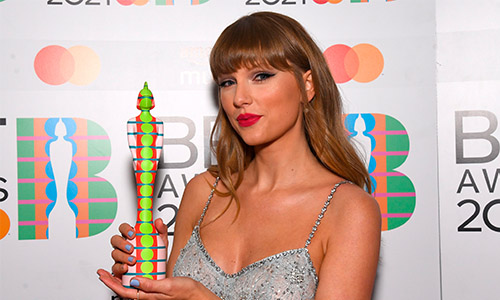
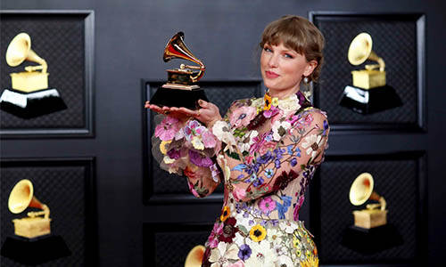

Noticias
Taylor Swift relanzará su disco RED con una lista de 30 canciones
Editado originalmente en 2012, será el próximo disco que Taylor Swift publicará, completamente regrabado, para recuperar la propiedad intelectual de su música después de que los derechos de sus primeros trabajos hayan terminado en manos de un fondo de inversión ajeno a la artista.
RED TV se lanzará el 19 de noviembre e incluirá un total de 30 canciones que la artista compuso en esa etapa. Esta será la primera vez que se escucharán todas las canciones que debieron incluirse originalmente en RED. Y bueno, una de ellas dura incluso diez minutos", anunció en redes sociales.
Taylor Swift acepta el premio NMPA Songwriter Icon Award
Taylor Swift recibió el Premio al Icono de Compositores de la Asociación Nacional de Editores de Música 2021 en la reunión anual de la organización el miércoles (9 de junio), y usó su discurso de aceptación para agradecer a los muchos colaboradores que la han ayudado en el camino.
“Quiero tomarme un momento para agradecer a las personas que fueron mis profesores, mis maestros, del oficio de escribir canciones”, dijo Swift, que apareció de forma remota en el evento virtual después de ser presentado por el presidente y director ejecutivo de NMPA, David Israelite. “En primer lugar, cualquiera que haya escrito conmigo en Nashville cuando estaba en octavo o noveno grado, es una locura que hayas hecho eso. Tengo tanta suerte de poder aprender de algunos de los mejores escritores de Music Row.
Taylor Swift hace historia en los BRIT Awards al ganar el Global Icon
La cantante Taylor Swift se ha convertido en la primera mujer en ganar el premio Global Icon en los BRIT Awards, galardón que recibió con un inspirador discurso.
Tiene solo 31 años y ya puede presumir de haber hecho historia en el mundo de la música... y en los BRIT Awards. Hasta ahora, lo habían recibido nombres como Elton John, David Bowie o Freddie Mercury. Pero ayer, Taylor se convirtió en la primera mujer en recoger el premio Global Icon.
En el discurso, Swift animó a los artistas y a los fans a no tener miedo en su vida: "Puede haber ocasiones en las que pones todo tu corazón y alma en algo, y te encuentras con cinismo o escepticismo, pero no puedes dejar que eso te aplaste, tienes que dejar que eso te alimente. Vivimos en un mundo en donde cualquiera está en el derecho de decir algo sobre ti en cualquier momento, pero recuerda que tú también tienes el derecho de demostrarles que están equivocados"
Taylor Swift bate el récord de mayor venta de vinilos con Evermore
En apenas casi una semana desde que salió el vinilo de Evermore, Taylor Swift bate el récord de mayor número de venta de vinilos. Tan solo dos días después de su salida, vendió más de 40 mil ejemplares en Estados Unidos.
Al igual que la salida de Evermore pilló por sorpresa, también lo ha hecho esta noticia. Hasta ese momento, encabezaba el récord el álbum Lazaretto (Third Man Records, 2014) de Jack White. Durante la primera semana de junio de 2014, vendió 40 mil copias.
Asimismo, cabe destacar que Taylor Swift ha lanzado tres discos en menos de doce meses. Así pues, se le ha reconocido como la primera persona en tener tres discos en el número uno de ventas en menos de doces meses.
Taylor Swift hizo historia en la noche mas importante de la música
Swift obtuvo el Grammy a álbum del año por Folklore y se convirtió en la primera mujer que gana dicho premio 3 veces (junto a Fearless en 2010 y 1989 en 2016).
Solo hay otros tres artistas con tres Grammy por álbum del año; Frank Sinatra, Paul Simon y Stevie Wonder.
